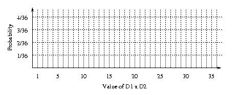

As you recall from our last episode, we found that the fixed number 7 was the value that yielded, in the long run, the smallest residual variance from the sum of two rolled dice. Residual variance was measured by the squared difference between the rolled value and the number 7.
In general, the best guess of the outcome is really a description of the central tendency of outcomes. When a description is formalized mathematically, it is a model. Our model is as follows: Any roll of the dice is the central tendency plus some deviation, or residual. We denote the central tendency as the letter M, a given outcome as yi, and the residual error as ei. Then our model of a given outcome is written:
In this episode of "cut your losses," we'll consider three ways to measure residual variance, and the consequences for the best value of M in our model. For purposes of this exercise, the outcome we'll consider is not the sum of the dice, but the product of the dice.
|
Roll the dice 10 times. Before each roll, guess the outcome. Enter the results in the table below. Notation: Outcome of die 1 is D1; outcome of die 2 is D2; product of the outcomes is D1xD2. | |||||||||||||||||||||||||||||||||||||||||||||||||||||||||||||||||
|
| |||||||||||||||||||||||||||||||||||||||||||||||||||||||||||||||||
|
Which model, your guess or 12.25, yielded the lower total residual variance? | |||||||||||||||||||||||||||||||||||||||||||||||||||||||||||||||||
|
Did 12.25 yield the lower residual on every roll? If it did, must it? | |||||||||||||||||||||||||||||||||||||||||||||||||||||||||||||||||
|
Did 12.25 yield the lower total residual for every person in your discussion class? If it did, must it? | |||||||||||||||||||||||||||||||||||||||||||||||||||||||||||||||||
|
Is there any other value that will yield as low a residual as 12.25? | |||||||||||||||||||||||||||||||||||||||||||||||||||||||||||||||||
Roll the dice 10 times. Before each roll, guess the outcome. (One interesting guess is the fixed value 12.25.) Enter the results in the table below. Notation: Outcome of die 1 is D1, outcome of die 2 is D2. abs(y) means the absolute value of y.
|
Residual variance measured as absolute deviation: abs(outcome - model) | ||||
| Roll # | Your Guess |
Actual D1xD2 |
Residual Variance from Guess: abs(D1xD2 - Guess) |
Residual Variance from 10.0: abs(D1xD2 - 10.0) |
| 1 | ||||
| 2 | ||||
| 3 | ||||
| 4 | ||||
| 5 | ||||
| 6 | ||||
| 7 | ||||
| 8 | ||||
| 9 | ||||
| 10 | ||||
| Total: | ||||
Which model, your guess or 10.0, yielded the lower total residual variance?
Did 10.0 yield the lower residual on every roll? If it did, must it?
Did 10.0 yield the lower total residual for every person in your discussion class? If it did, must it?
Is there any other value that will yield as low a residual as 10.0?
Roll the dice 10 times. Before each roll, guess the outcome. (One interesting guess is the fixed value 10.0.) Enter the results in the table below. Notation: Outcome of die 1 is D1, outcome of die 2 is D2.
|
Residual variance measured as number of deviations: 0 if outcome = model, 1 otherwise | ||||
| Roll # | Your Guess |
Actual D1xD2 |
Residual Variance from Guess: 0 if D1xD2 = Guess, 1 otherwise |
Residual Variance from 6.0: 0 if D1xD2 = 6.0, 1 otherwise |
| 1 | ||||
| 2 | ||||
| 3 | ||||
| 4 | ||||
| 5 | ||||
| 6 | ||||
| 7 | ||||
| 8 | ||||
| 9 | ||||
| 10 | ||||
| Total: | ||||
Which model, your guess or 6.0, yielded the lower total residual variance?
Did 6.0 yield the lower residual on every roll? If it did, must it?
Did 6.0 yield the lower total residual for every person in your discussion class? If it did, must it?
Is there any other value that will yield as low a residual as 6.0?
Now you will generate a probability distribution for the possible outcomes of the dice. There are 36 equally likely outcomes for a role of the dice, as indicated in table below. In the table, enter the product of D1 and D2.
| D1 | D2 | |||||
| 1 | 2 | 3 | 4 | 5 | 6 | |
| 1 | ||||||
| 2 | ||||||
| 3 | ||||||
| 4 | ||||||
| 5 | ||||||
| 6 | ||||||
Now make a bar graph of the probability of each possible outcome: 
What is the mean of this distribution? Mark it on the graph. Which measure of residual variability is minimized when M is the mean?
What is the median of this distribution? Mark it on the graph. Which measure of residual variability is minimized when M is the median?
What is/are the mode/s of this distribution? Mark it/them on the graph.
Which measure of residual variability is minimized when M is a mode?